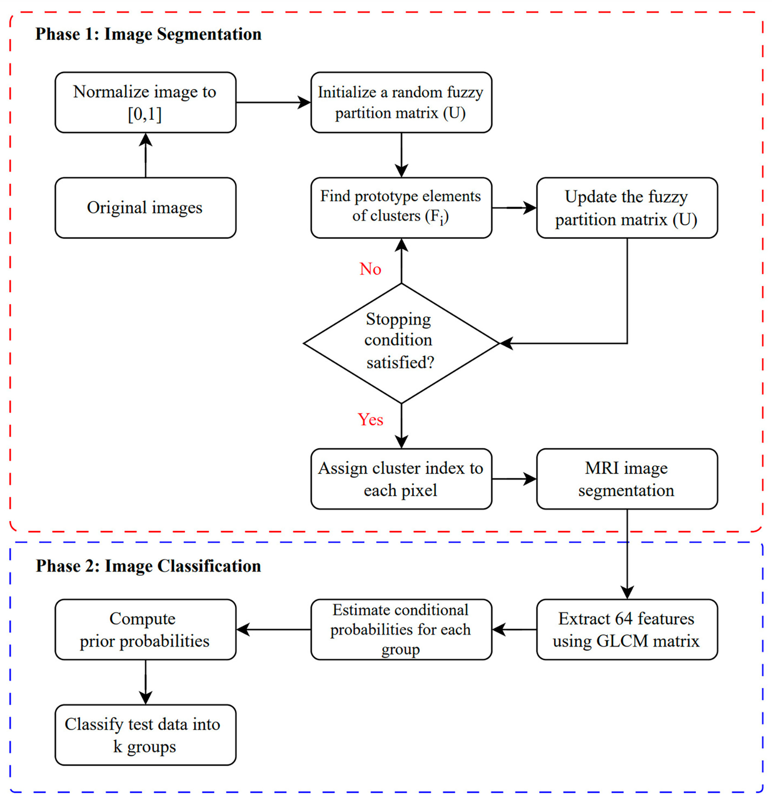
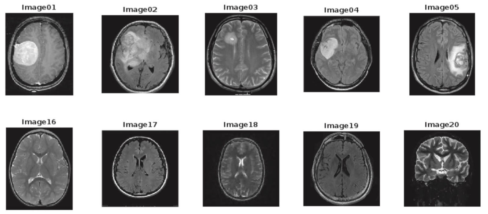
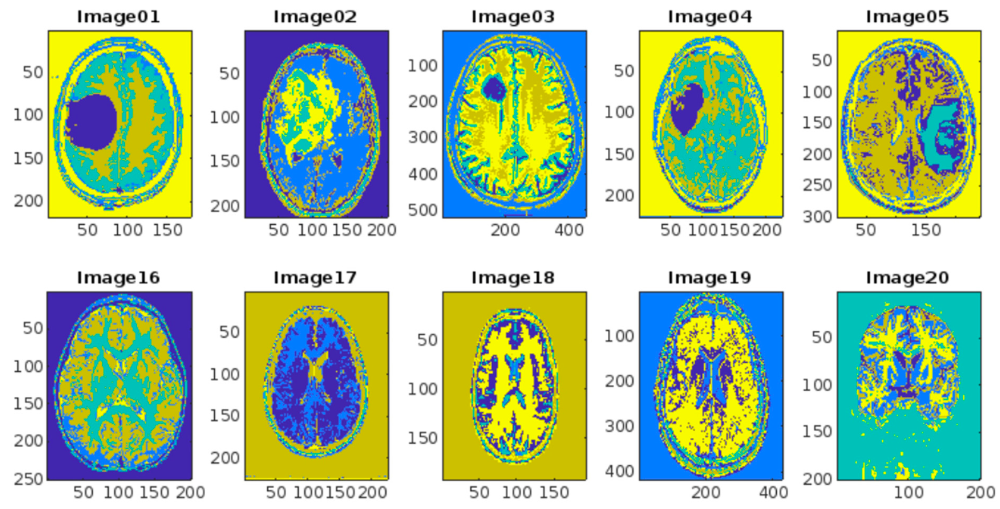
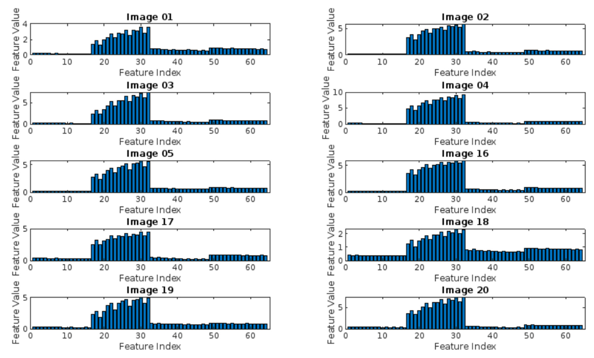

Projects · Computer Vision · Medical Imaging (Research)
Brain MRI Segmentation
A fuzzy-clustering + GLCM texture + Naïve Bayes pipeline for brain tumor segmentation — published in a peer-reviewed journal, beating VGG16 and ResNet50 on speed without giving up accuracy.

Problem
Why this matters
Manual tumor segmentation on brain MRI scans is slow and depends on the radiologist reading it. Most automated alternatives lean on deep learning, which needs large labeled datasets and heavy compute to avoid overfitting — hard requirements in a lot of real clinical settings. This project asked a different question: how far can a lighter, classical machine learning pipeline get, both in accuracy and in speed? The result was published as a peer-reviewed paper: “A Novel Supervised Learning Model for MRI Image Using Fuzzy Clustering and Naïve Bayes Algorithms” (Model Assisted Statistics and Applications, 2025).
Method
How it was built
Built in MATLAB. Tumor regions are first segmented with fuzzy clustering, then GLCM (Gray-Level Co-occurrence Matrix) texture features are extracted from the segmented regions across 4 distances and 4 angles (64 features total), and a Naïve Bayes classifier makes the final call on the extracted features.

The two-phase pipeline: Phase 1 segments the MRI with fuzzy clustering, Phase 2 extracts 64 GLCM features from the segmented regions and classifies with Naive Bayes.
Data
Dataset & evaluation setup
Two applications were run: a 30-image illustrative example (reaching 100% accuracy, F1 = 1 — useful as a sanity check, not a headline result on its own), and the main 800-image benchmark, split 624 training / 156 validation / 20 test, which is the basis for the results below.

Sample MRI slices from the benchmark, showing tumor regions (bright areas) the pipeline needs to segment.
Metrics
Main benchmark (800 images), best configuration
95.45%
Accuracy — fuzzy clustering + GLCM + Naïve Bayes
96.0
F1-score, same configuration
182s
Computation time — vs. 486s (VGG16) and 490s (ResNet50)

Fuzzy clustering segmentation output on 10 sample scans, each color marking a distinct tissue cluster that the GLCM + Naive Bayes step then classifies.

GLCM feature vectors (64 features per image, extracted across 4 distances x 4 angles) that feed the Naive Bayes classifier.
Learnings
How it compares to deep learning baselines
On the same 800-image dataset, VGG16 reached 89.40% accuracy / 88.40 F1 in 486s, and ResNet50 reached 90.17% accuracy / 90.03 F1 in 490s — both lower accuracy than the proposed pipeline, and roughly 2.7× slower. The paper attributes part of the deep learning gap to overfitting on a dataset this size. The takeaway isn’t “classical ML always beats deep learning” — it’s that when the dataset is limited, a well-engineered classical pipeline with hand-crafted texture features can be both more accurate and dramatically cheaper to run than defaulting straight to a CNN.